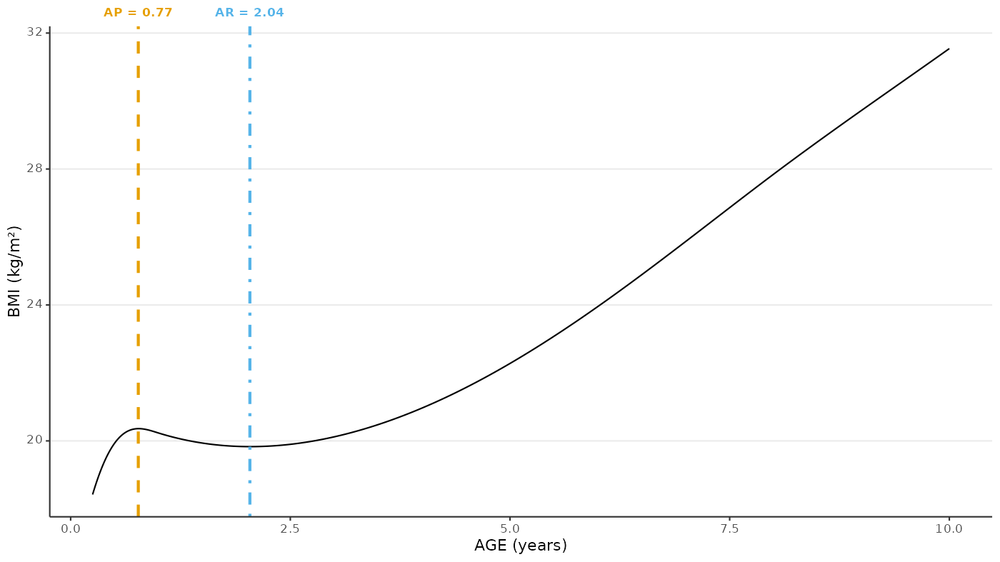
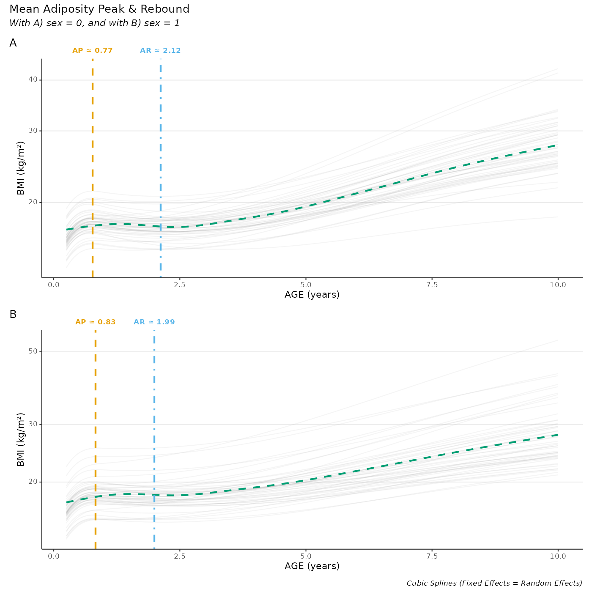

Adiposity Peak & Adiposity Rebound Caracterisation
Mickaël Canouil, Ph.D. (mickael.canouil@cnrs.fr)
Source:vignettes/articles/adiposity-peak-rebound.Rmd
adiposity-peak-rebound.RmdR setup
output_directory <- file.path(params[["working_directory"]], "models-diagnostics")
dir.create(output_directory, recursive = TRUE, showWarnings = FALSE, mode = "0775")
library(eggla)
#> Default 'ggplot2' theme has been changed.
#> Default 'ggplot2' colour and fill scales set to 'viridis'.
library(stats)
library(utils)
library(data.table)
library(ggplot2)
library(ggtext)
library(patchwork)
theme_update(
plot.title = element_markdown(),
plot.subtitle = element_markdown(face = "italic"),
plot.caption = element_markdown(face = "italic"),
axis.title.x = element_markdown(),
axis.text.x = element_markdown(),
axis.title.y = element_markdown(),
axis.text.y = element_markdown(),
axis.line.x.top = element_blank(),
axis.ticks.x.top = element_blank()
)
okabe_ito_palette <- c(
"#E69F00FF", "#56B4E9FF", "#009E73FF", "#F0E442FF", "#0072B2FF",
"#D55E00FF", "#CC79A7FF", "#999999FF"
)Results
res_0 <- egg_model(
formula = log(bmi) ~ age,
data = bmigrowth[bmigrowth[["sex"]] == 0, ],
id_var = "ID",
random_complexity = 1
)
#> Fitting model:
#> nlme::lme(
#> fixed = log(bmi) ~ gsp(age, knots = c(1, 8, 12), degree = rep(3, 4), smooth = rep(2, 3)),
#> data = data,
#> random = ~ gsp(age, knots = c(1, 8, 12), degree = rep(1, 4), smooth = rep(2, 3)) | ID,
#> na.action = stats::na.omit,
#> method = "ML",
#> control = nlme::lmeControl(opt = "optim", maxIter = 500, msMaxIter = 500)
#> )
res_1 <- egg_model(
formula = log(bmi) ~ age,
data = bmigrowth[bmigrowth[["sex"]] == 1, ],
id_var = "ID",
random_complexity = 1
)
#> Fitting model:
#> nlme::lme(
#> fixed = log(bmi) ~ gsp(age, knots = c(1, 8, 12), degree = rep(3, 4), smooth = rep(2, 3)),
#> data = data,
#> random = ~ gsp(age, knots = c(1, 8, 12), degree = rep(1, 4), smooth = rep(2, 3)) | ID,
#> na.action = stats::na.omit,
#> method = "ML",
#> control = nlme::lmeControl(opt = "optim", maxIter = 500, msMaxIter = 500)
#> )Compute adiposity peak (AP) and adiposity rebound (AR)
predicted_data <- list(
compute_apar(fit = res_0, from = "predicted"),
compute_apar(fit = res_1, from = "predicted")
)
names(predicted_data) <- c("0", "1")
predicted_data_all <- rbindlist(predicted_data, idcol = "sex")Plot AP/AR for one individual
one_individual_data <- predicted_data_all[egg_id %in% egg_id[1]]
one_individual_apar <- melt(
data = one_individual_data[AP | AR],
id.vars = c("egg_id", "egg_ageyears"),
measure.vars = c("AP", "AR")
)[
(value)
][
j = labels := sprintf(
"<b style=\"color:%s;\">%s = %s</b>",
okabe_ito_palette[c(1, 2)][variable],
variable,
egg_ageyears
)
]
ggplot(data = one_individual_data) +
geom_line(mapping = aes(x = egg_ageyears, y = egg_bmi)) +
geom_vline(
data = one_individual_apar,
mapping = aes(
xintercept = egg_ageyears,
colour = variable,
linetype = variable
),
size = 1,
show.legend = FALSE
) +
scale_x_continuous(
sec.axis = dup_axis(
name = NULL,
breaks = one_individual_apar[["egg_ageyears"]],
labels = one_individual_apar[["labels"]]
)
) +
scale_colour_manual(values = okabe_ito_palette[c(1, 2)]) +
scale_linetype_manual(values = c(2, 4)) +
labs(
x = "AGE (years)",
y = "BMI (kg/m\u00B2)",
colour = NULL,
linetype = NULL
) +
theme(axis.text.x.top = element_markdown())
#> Warning: Using `size` aesthetic for lines was deprecated in ggplot2 3.4.0.
#> ℹ Please use `linewidth` instead.
#> This warning is displayed once every 8 hours.
#> Call `lifecycle::last_lifecycle_warnings()` to see where this warning was
#> generated.
Plot average AP/AR for all individuals
p_apar <- mapply(
data = predicted_data,
sex = names(predicted_data),
SIMPLIFY = FALSE,
FUN = function(data, sex) {
if (nrow(data) == 0) return(ggplot() + geom_blank())
predicted_dt_apar <- melt(
data = data[AP | AR],
id.vars = c("egg_id", "egg_ageyears"),
measure.vars = c("AP", "AR")
)[
(value)
][
j = list(egg_ageyears = mean(egg_ageyears)),
by = "variable"
][
j = labels := sprintf(
"<b style=\"color:%s;\">%s ≃ %0.2f</b>",
okabe_ito_palette[c(1, 2)][variable],
variable,
egg_ageyears
)
]
ggplot(data = data) +
aes(x = egg_ageyears, y = egg_bmi) +
geom_path(# Comment or remove this for big cohort
mapping = aes(group = factor(egg_id)),
colour = "#333333",
na.rm = TRUE,
alpha = 0.05,
show.legend = FALSE
) +
stat_smooth(
method = "gam", # Comment for big cohort
formula = y ~ s(x, bs = "cr"), # Comment this for big cohort
linetype = 2,
colour = okabe_ito_palette[3],
se = FALSE
) +
geom_vline(
data = predicted_dt_apar,
mapping = aes(
xintercept = egg_ageyears,
colour = variable,
linetype = variable
),
size = 1,
show.legend = FALSE
) +
scale_x_continuous(
sec.axis = dup_axis(
name = NULL,
breaks = predicted_dt_apar[["egg_ageyears"]],
labels = predicted_dt_apar[["labels"]]
)
) +
scale_y_log10() +
scale_colour_manual(values = okabe_ito_palette[c(1, 2)]) +
scale_linetype_manual(values = c(2, 4)) +
labs(
x = "AGE (years)",
y = "BMI (kg/m\u00B2)",
colour = NULL,
linetype = NULL
) +
theme(axis.text.x.top = element_markdown())
}
)
wrap_plots(p_apar, nrow = 2) +
plot_annotation(
title = "Mean Adiposity Peak & Rebound",
caption = "Cubic Splines (Fixed Effects = Random Effects)",
subtitle = "With A) sex = 0, and with B) sex = 1",
tag_levels = "A"
)